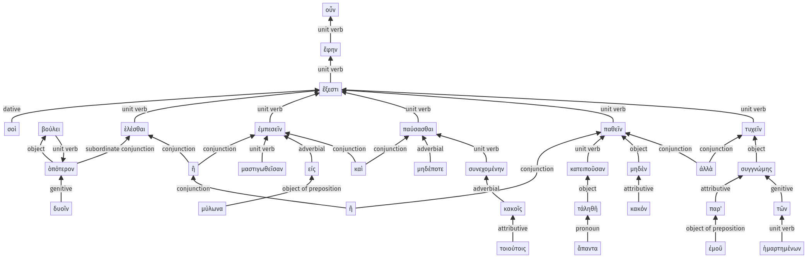

Lysias, Oration 1, 1.18.29b-1.18.62a
1.18.1-1.18.29a | 1.18.63-1.18.69a
Sentence 46
1.18.29b-1.18.62a
"σοὶ οὖν "ἔφην "ἔξεστι δυοῖν ὁπότερον βούλει ἑλέσθαι, ἢ μαστιγωθεῖσαν εἰς μύλωνα ἐμπεσεῖν καὶ μηδέποτε παύσασθαι κακοῖς τοιούτοις συνεχομένην, ἢ κατειποῦσαν ἅπαντα τἀληθῆ μηδὲν παθεῖν κακόν, ἀλλὰ συγγνώμης παρ' ἐμοῦ τυχεῖν τῶν ἡμαρτημένων.
2 σοὶ
1 ἔφην
2 ἔξεστι
4 δυοῖν ὁπότερον βούλει
3 ἑλέσθαι
3 ἢ
4 μαστιγωθεῖσαν
3 εἰς μύλωνα ἐμπεσεῖν
3 καὶ μηδέποτε παύσασθαι
4 κακοῖς τοιούτοις συνεχομένην
3 ἢ
4 κατειποῦσαν ἅπαντα τἀληθῆ
3 μηδὲν παθεῖν κακόν
3 ἀλλὰ συγγνώμης παρ' ἐμοῦ τυχεῖν
4 τῶν ἡμαρτημένων
"σοὶ οὖν "ἔφην "ἔξεστι δυοῖν ὁπότερον βούλει ἑλέσθαι, ἢ μαστιγωθεῖσαν εἰς μύλωνα ἐμπεσεῖν καὶ μηδέποτε παύσασθαι κακοῖς τοιούτοις συνεχομένην, ἢ κατειποῦσαν ἅπαντα τἀληθῆ μηδὲν παθεῖν κακόν, ἀλλὰ συγγνώμης παρ' ἐμοῦ τυχεῖν τῶν ἡμαρτημένων.
Highlighting:
- connecting words
- unit verb
- subject
- object
Color code:
- independent clause (level 1, transitive verb)
- quote (level 2, intransitive verb)
- subordinate clause (level 4, transitive verb)
- infinitive in indirect statement (level 3, transitive verb)
- infinitive in indirect statement (level 3, transitive verb)
- infinitive in indirect statement (level 3, transitive verb)
- infinitive in indirect statement (level 3, transitive verb)
- infinitive in indirect statement (level 3, transitive verb)
- circumstantial participle (level 4, transitive verb)
- circumstantial participle (level 4, transitive verb)
- circumstantial participle (level 4, transitive verb)
- attributive participle (level 4, transitive verb)
